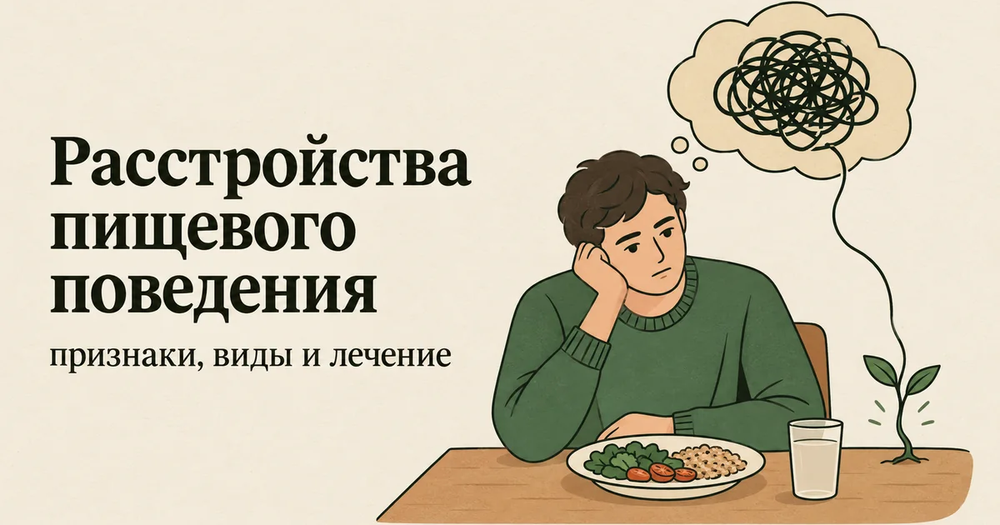
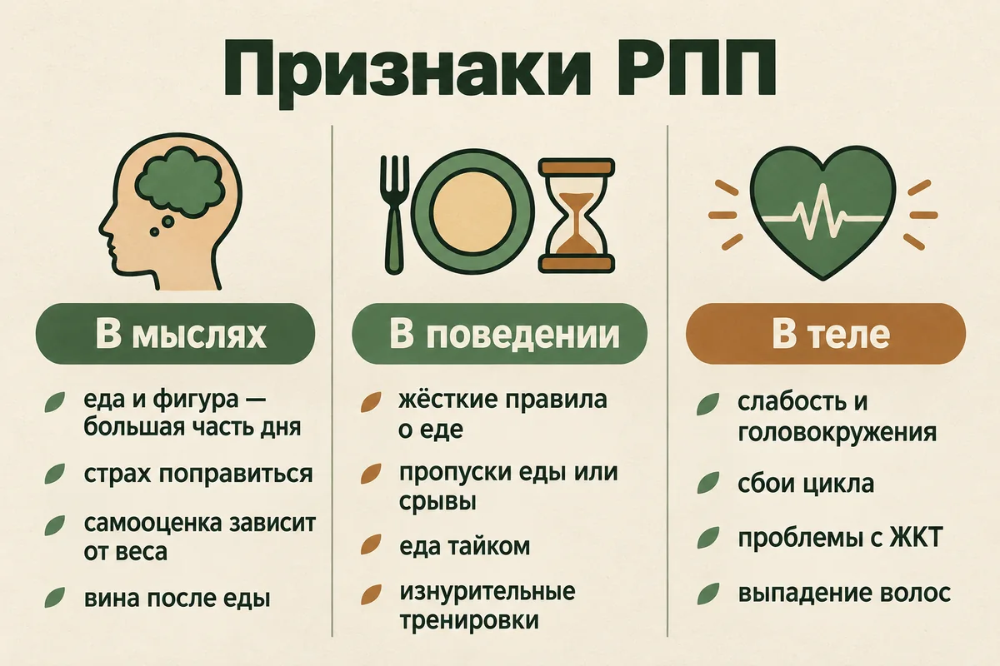
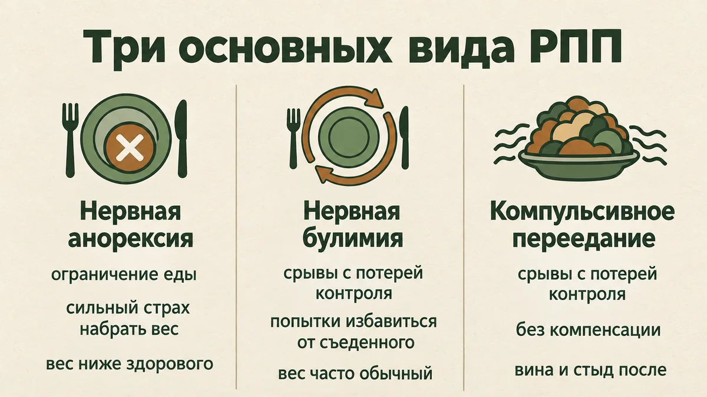
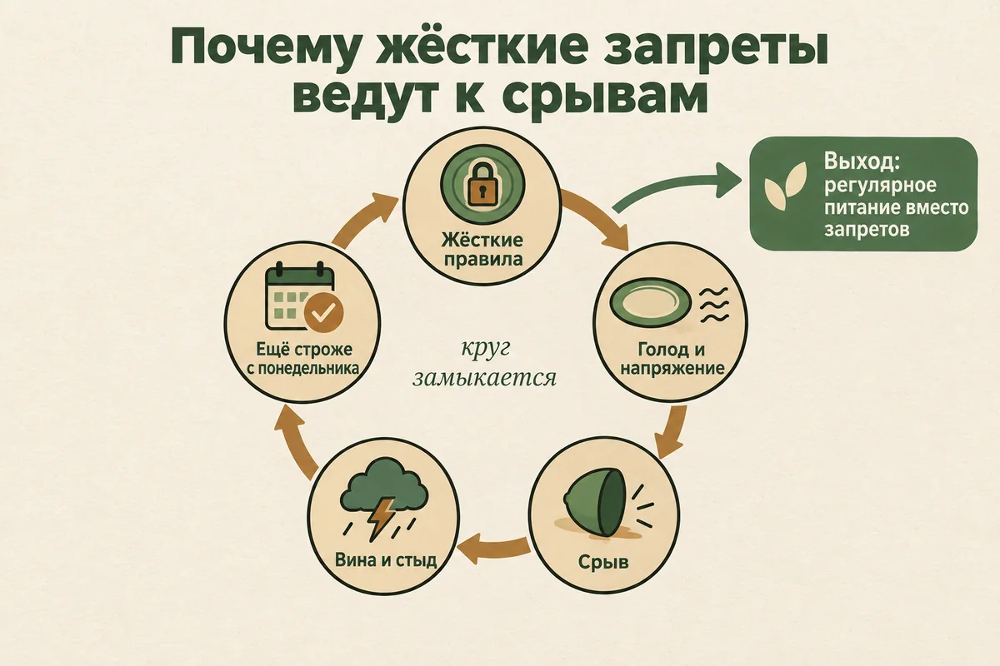
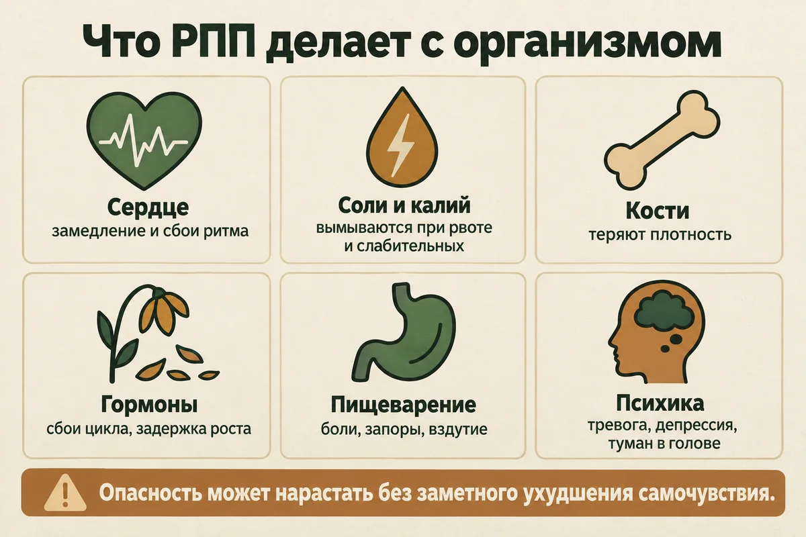
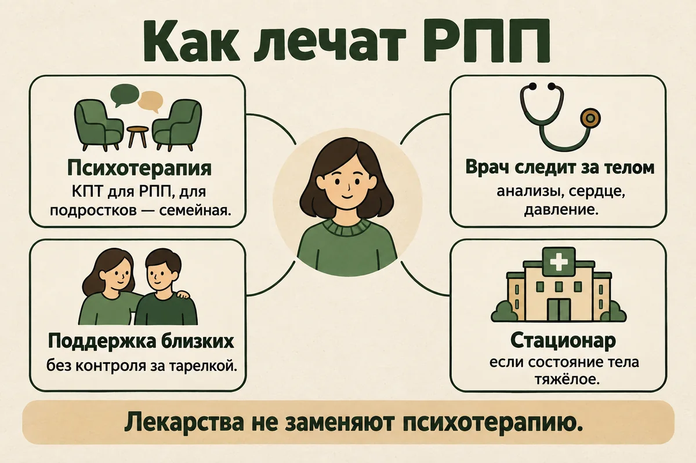
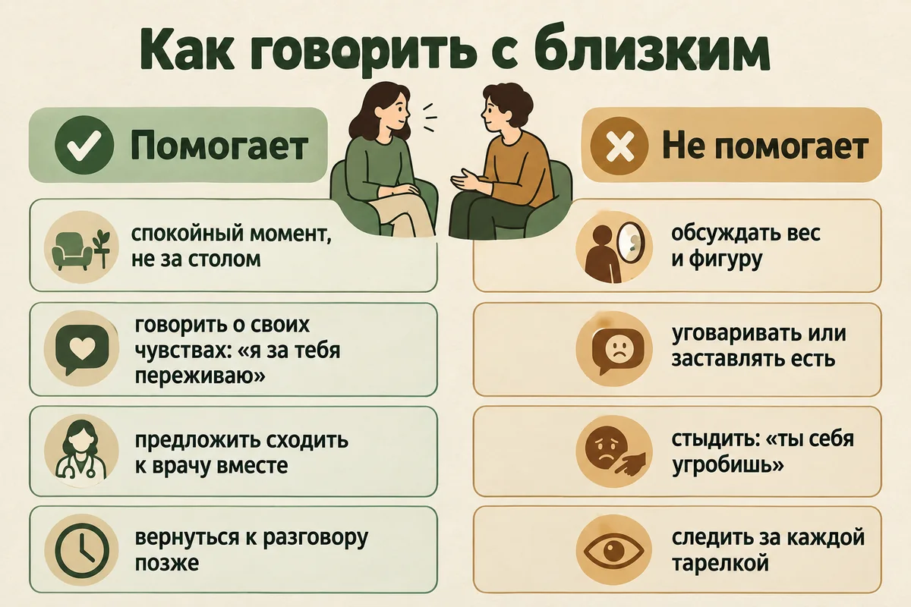

Главная → Блог → Расстройства пищевого поведения
Расстройства пищевого поведения (РПП): симптомы, виды, причины и лечение
Обновлено: 16.09.2026 · Источники проверены: 16.09.2026 · 22 минуты чтения

Расстройства пищевого поведения (РПП) — это группа психических расстройств, при которых нарушаются отношения с едой и пищевое поведение, и это приводит к выраженным страданиям, трудностям в повседневной жизни или вреду для здоровья. Самые известные из них — нервная анорексия, нервная булимия и компульсивное переедание; при них центральное место обычно занимают вес и фигура. Но есть и другие формы, при которых вес может быть вообще ни при чём. РПП бывает при любом весе, у людей любого пола и возраста, и оно лечится. Ниже — как понять, что отношения с едой стали проблемой, какие бывают виды РПП, чем они опасны, как проходит диагностика и лечение и что можно сделать уже сейчас — для себя или для близкого человека.
- Что такое РПП и чем оно отличается от диеты
- Как понять, что отношения с едой стали проблемой
- Симптомы и признаки РПП
- Виды РПП
- Может ли быть РПП при нормальном весе
- РПП у мужчин
- РПП у подростков: на что обратить внимание родителям
- Почему возникает РПП
- Как ограничения превращаются в переедание
- Чем опасны расстройства пищевого поведения
- Как диагностируют РПП и какие анализы могут назначить
- Как лечат РПП
- Что можно сделать уже сейчас
- Как помочь близкому
- Когда нужна срочная помощь и к кому обращаться
- Частые вопросы
Что такое РПП и чем оно отличается от диеты
Расстройство пищевого поведения — это не особенность вкуса и не «неправильное питание», а психическое расстройство. Всемирная организация здравоохранения описывает такие расстройства как нарушенное питание и поглощённость едой, которые при анорексии и булимии сочетаются с выраженной озабоченностью весом и фигурой; симптомы при этом создают серьёзный риск для здоровья, сильные страдания или мешают жить. По оценке ВОЗ, в 2023 году расстройствами пищевого поведения страдали около 18 миллионов человек, из них 4,7 миллиона — дети и подростки.
Если считать не за один год, а за всю жизнь, картина заметнее. В обзоре 94 исследований 2000–2018 годов расстройство пищевого поведения хотя бы раз в жизни было в среднем у 8,4% женщин и 2,2% мужчин, а доля людей с РПП за этот период выросла. При этом РПП часто годами скрывают, и о нём редко спрашивают на обычном приёме.
Отличить РПП от диеты помогает не меню, а то, что происходит вокруг еды:
| Диета или привычка | Расстройство пищевого поведения | |
|---|---|---|
| Правила о еде | Гибкие: можно отступить на празднике и спокойно вернуться | Жёсткие: нарушение вызывает сильную тревогу или вину |
| Место в мыслях | Еда — одна из тем дня | Мысли о еде, весе или фигуре отнимают много внимания |
| Самооценка | Не зависит от цифры на весах | Настроение и отношение к себе сильно зависят от веса и отражения |
| Контроль | Человек решает, что и сколько есть | Ощущение, что еда управляет человеком, а не наоборот |
| Жизнь вокруг | Еда не мешает общению и делам | Питание начинает мешать работе, учёбе, отношениям |
| Тело | Самочувствие не страдает | Слабость, головокружения, сбои цикла, проблемы с пищеварением |
Как понять, что отношения с едой стали проблемой
Обратите внимание не только на то, сколько человек ест, но и на то, сколько контроля, тревоги и страданий вокруг еды. Стоит насторожиться, если:
- еда вызывает сильную тревогу, а правила питания становятся всё жёстче;
- после еды появляется выраженное чувство вины или стыда;
- приходится скрывать еду или то, как вы едите;
- бывают эпизоды, когда контроль над едой теряется;
- после еды возникает желание вызвать рвоту, принять слабительное или «отработать» съеденное тренировкой;
- настроение и самооценка сильно зависят от веса и фигуры;
- из-за еды вы избегаете встреч, праздников и совместных обедов;
- питание начинает мешать работе, учёбе или отношениям.
Не обязательно иметь низкий вес или все эти признаки. Самостоятельно поставить диагноз по списку нельзя, но даже несколько пунктов — достаточная причина обратиться за оценкой к специалисту.
Симптомы и признаки РПП
Расстройство пищевого поведения видно не только по весу. Часто первыми меняются мысли и привычки, а тело откликается позже. Признаки могут выглядеть по-разному, и тяжесть расстройства не всегда соответствует тому, насколько оно заметно со стороны.
В мыслях и чувствах
- Мысли о еде, калориях, весе или фигуре отнимают много внимания.
- Сильный страх поправиться — даже когда окружающие говорят, что худеть некуда.
- Самооценка зависит от веса и отражения: «похудела — я молодец, съела лишнее — со мной что-то не так».
- После еды — вина, стыд или отвращение к себе.
- Ощущение, что контроль над едой потерян.
- Раздражительность, тревога, подавленность, особенно вокруг приёмов пищи.
В поведении
- Жёсткие правила: что, когда и в каком количестве можно есть.
- Пропуск приёмов пищи, долгие периоды голода, отказ от целых групп продуктов.
- Эпизоды, когда за короткое время съедается очень много.
- Рвота после еды, слабительные, мочегонные, таблетки для подавления аппетита.
- Изнурительные тренировки, которые нельзя пропустить даже при болезни.
- Еда тайком, запасы еды, неправда о съеденном.
- Частые взвешивания, разглядывание себя в зеркале, измерение объёмов.
В теле
- Заметные колебания веса; у детей и подростков — отставание в росте и развитии.
- Слабость, головокружения, постоянная усталость, мёрзнущие руки и ноги.
- Нерегулярные или прекратившиеся менструации.
- Вздутие, запоры, боли в животе.
- Сухая кожа, выпадение волос, пушковые волосы на теле.
- При частой рвоте — больное горло, припухлость под ушами из-за увеличенных слюнных желёз, разрушение зубной эмали.
В повседневной жизни
- Человек избегает кафе, праздников и застолий или перестаёт есть вместе с другими.
- Одежду выбирает по тому, насколько она скрывает тело.
- Тренировки начинают мешать учёбе, работе или отношениям.
- Постоянно ищет новые способы изменить тело — диеты, программы, «детоксы».
- Из-за еды возникают конфликты с близкими.

Виды РПП: анорексия, булимия, переедание и другие
В Международной классификации болезней 11-го пересмотра расстройства питания и пищевого поведения выделены в отдельную группу. Самые известные — три.
Нервная анорексия
Масса тела значительно снижена с учётом возраста, роста и индивидуальных особенностей, а человек продолжает ограничивать еду, изнурять себя тренировками, иногда вызывает рвоту или принимает слабительные. В центре — сильный страх набрать вес и искажённое восприятие тела: человек может считать себя полным, когда его вес опасно низок. Анорексия часто начинается в подростковом возрасте, но встречается у людей любого пола и возраста.
Нервная булимия
Повторяются эпизоды переедания с ощущением потери контроля, а после них — попытки «избавиться» от съеденного: рвота, слабительные или мочегонные, голодание, изнурительные тренировки. Вес при булимии часто обычный, поэтому со стороны расстройство долго не видно. Человек переживает сильный стыд и скрывает происходящее.
Компульсивное переедание
Регулярные эпизоды, когда человек съедает очень много за короткое время и не может остановиться, даже когда уже неприятно сыт, — но без попыток избавиться от съеденного. Он может есть быстрее обычного, в одиночку или без чувства физического голода, хотя эти признаки есть не у каждого. Человек часто описывает такой эпизод как потерю контроля, а после него испытывает выраженный стыд, вину или отвращение к себе.

| Анорексия | Булимия | Компульсивное переедание | |
|---|---|---|---|
| Основной паттерн | Ограничение еды | Эпизоды переедания и компенсация | Эпизоды переедания с потерей контроля |
| Компенсация | Может быть: тренировки, рвота, слабительные | Характерна | Нет |
| Вес | Значительно снижен | Любой, часто обычный | Любой |
| Страх набрать вес | Выражен | Выражен | Может быть, но не обязателен |
| Что мешает обратиться | Человек часто не считает состояние опасным | Стыд и скрытность | Мысль, что дело в «силе воли» |
Это упрощённое сравнение. Диагноз ставят не по таблице, а по совокупности симптомов и клинической оценке.
Другие формы РПП
- Избегающее-ограничительное расстройство приёма пищи. Человек ест очень мало или очень узкий набор продуктов, но не из-за желания похудеть: причиной может быть неприятие текстуры или запаха пищи, страх подавиться или отравиться, отсутствие интереса к еде. Встречается и у детей, и у взрослых.
- Пика. Регулярное поедание несъедобного — например, земли, мела или бумаги.
- Расстройство руминации. Повторяющееся срыгивание уже проглоченной пищи, которую человек снова пережёвывает, проглатывает или выплёвывает.
- Другие уточнённые расстройства пищевого поведения. Симптомы вызывают серьёзные страдания или вред, но не полностью соответствуют критериям ни одного из конкретных диагнозов: например, признаки анорексии без значительного снижения веса. Это очень распространённая группа, и она требует лечения так же, как «классические» формы.
- Неуточнённое расстройство пищевого поведения. Так обозначают РПП, когда информации пока недостаточно для более точной классификации.
Отдельно часто говорят об орторексии — навязчивой погоне за «правильным» и «чистым» питанием, при которой список запретов растёт, а отступление от правил вызывает тревогу и вину. Отдельным диагнозом она не считается, но может перерасти в РПП и заслуживает внимания.
Может ли быть РПП при нормальном весе
Да. Вес сам по себе не исключает РПП. Человек с булимией, компульсивным перееданием или другими формами расстройства может выглядеть «обычно» — и при этом иметь серьёзное расстройство с опасными последствиями для тела. Например, частая рвота нарушает баланс солей в крови независимо от того, сколько человек весит.
Британские клинические рекомендации NICE прямо говорят специалистам: не решать, нужна ли человеку помощь, по одному показателю вроде индекса массы тела или длительности болезни. Поэтому низкий вес — не обязательное условие для того, чтобы обратиться за помощью. Важно не то, сколько вы весите, а то, что происходит с мыслями, чувствами и поведением вокруг еды.
РПП у мужчин
Расстройства пищевого поведения у женщин встречаются чаще, но у мужчин они совсем не редкость: в обзоре 94 исследований РПП хотя бы раз в жизни было в среднем у 2,2% мужчин. И риск у них не ниже: в метаанализе 2026 года повышение смертности при анорексии у мужчин оказалось сопоставимым с женским.
Проблема в том, что у мужчин РПП распознают реже и позже. Мешает стереотип «это женская болезнь», а сами проявления легко принять за увлечение спортом и здоровым образом жизни. На что стоит обратить внимание:
- изнурительные тренировки, которые нельзя пропустить ни при болезни, ни ради важных дел;
- одержимость «сушкой», процентом жира и рельефом, жёсткий контроль питания ради них;
- тревога и раздражение, если режим тренировок или питания нарушен;
- отказ от совместных обедов и мероприятий, где нельзя контролировать еду;
- эпизоды переедания, после которых следуют голод или тренировки «на износ»;
- недовольство телом, которое не проходит, сколько бы ни менялась форма.
Отдельный фактор риска — занятия, где важны вес или внешний вид: виды спорта с весовыми категориями, бодибилдинг, танцы. Обращаться за помощью мужчинам часто мешает стыд, но РПП у мужчин лечится теми же методами, что и у женщин.
РПП у подростков: на что обратить внимание родителям
По данным NICE, риск расстройств пищевого поведения выше всего у юношей и девушек в 13–17 лет. У подростков РПП может развиваться быстро, а его первые признаки легко принять за «возраст» или увлечение правильным питанием. Родителям стоит насторожиться, если они замечают:
- пропуски еды, отговорки «я уже поел», исключение целых групп продуктов;
- резкие изменения в питании — например, внезапный переход на очень узкий набор «разрешённых» продуктов;
- отказ от совместных приёмов пищи;
- тайные или изнурительные тренировки;
- частое взвешивание и разглядывание себя в зеркале;
- пропажу еды или спрятанные обёртки;
- походы в ванную сразу после еды;
- резкие перемены настроения, замкнутость, раздражительность;
- отставание в росте или задержку полового созревания.
Ждать, пока подросток сам согласится на лечение, не нужно: обратитесь к педиатру или детскому психиатру. При анорексии у подростков NICE в первую очередь рекомендует семейную терапию, в которой родители становятся частью лечения. РПП у подростков нередко идёт вместе с депрессией — о том, как её распознать, в статье о подростковой депрессии.
Почему возникает РПП
Точная причина расстройств пищевого поведения неизвестна. Обычно складываются несколько факторов, и ни один из них сам по себе не делает РПП неизбежным.
- Биологические. Наследственная предрасположенность: РПП чаще встречается у людей, чьи родственники страдали расстройствами пищевого поведения, депрессией или зависимостью от алкоголя и наркотиков. Это предрасположенность, а не приговор.
- Психологические. Перфекционизм, тревожность, навязчивые черты, трудности с регуляцией эмоций, низкая самооценка и склонность к постоянному чувству вины.
- Социальные. Замечания о фигуре и питании в семье, насмешки и травля, давление на внешний вид, соцсети с «идеальными» телами.
- Поведенческие. Жёсткие диеты и ограничения питания: для многих РПП начинается с обычного похудения, которое постепенно выходит из-под контроля.
- Среда. Профессиональный спорт, танцы, модельный бизнес и другие занятия, где вес или внешность жёстко регулируются.
- Тяжёлый опыт. Насилие, травматичный детский опыт, потери, резкие перемены. У некоторых людей контроль над питанием становится способом справляться с тревогой, стрессом или ощущением потери контроля в других сферах жизни.
РПП — не выбор и не «привлечение внимания». Человек не решает заболеть и не может просто решить выздороветь — так же, как нельзя усилием воли прекратить паническую атаку или депрессию.
Как ограничения превращаются в переедание
Многие люди с булимией и компульсивным перееданием уверены, что им просто не хватает силы воли и «надо держаться строже». Но жёсткие ограничения, наоборот, повышают вероятность следующего эпизода переедания и поддерживают цикл. В быту такие эпизоды называют «срывами», хотя в клиническом языке говорят нейтральнее — «эпизод переедания»: в нём нет моральной оценки. Механизм выглядит так:
- Жёсткие правила. Человек недоволен весом или фигурой и решает сильно ограничить еду: пропускать приёмы пищи, убрать «запрещённые» продукты, есть как можно меньше.
- Голод и напряжение. Организм отвечает на недоедание усилением голода, а мысли всё сильнее крутятся вокруг еды. Запрещённое становится особенно желанным.
- Эпизод переедания. Правило нарушается — от усталости, стресса, одиночества или голода. Раз «уже всё испорчено», человек съедает намного больше, чем собирался.
- Вина и стыд. После эпизода — отвращение к себе и страх набрать вес.
- Компенсация. Рвота, слабительные, голодание, изнурительная тренировка или обещание «с понедельника ещё строже». И цикл начинается снова.
Отсюда вывод, на котором построено лечение: разрывать цикл начинают не с новых запретов, а с регулярного и достаточного питания. Когда уходит сильный голод, эпизодов переедания обычно становится меньше, а с ними слабеет и потребность в компенсации.

Чем опасны расстройства пищевого поведения
Расстройства пищевого поведения связаны с повышенным риском преждевременной смерти, особенно нервная анорексия. В метаанализе исследований 2010–2024 годов смертность при анорексии была примерно в 5,2 раза выше ожидаемой для людей того же возраста и пола, при булимии — в 2,2 раза, при компульсивном переедании — примерно в 1,5 раза. Метаанализ анорексии 2026 года подтвердил эту оценку и показал, что около 21% смертей при анорексии — самоубийства, а около 19% связаны с сердцем. Более ранний метаанализ Arcelus и соавторов 2011 года давал для анорексии близкую оценку — 5,86.
Что происходит с организмом:
- Сердце. Недоедание и потеря солей замедляют сердечный ритм и нарушают его. Опасность может нарастать без заметного ухудшения самочувствия.
- Электролиты. Рвота, слабительные и мочегонные вымывают калий и другие соли. Их нехватка вызывает слабость, судороги и опасные нарушения ритма сердца.
- Кости. При долгом дефиците веса снижается плотность костей и растёт риск переломов, а у подростков может страдать рост.
- Гормоны. Прекращаются менструации, снижается влечение, у подростков задерживается половое созревание.
- Пищеварение и зубы. Запоры, вздутие, боли, при частой рвоте — повреждение пищевода и разрушение зубной эмали.
- Психика. Голодание ухудшает концентрацию и сон, усиливает тревогу, раздражительность и поглощённость едой. РПП часто идёт вместе с депрессией, тревожными расстройствами и ОКР.

3 мифа, из-за которых РПП не замечают
- «Просто надо взять себя в руки». РПП — психическое расстройство, а не недостаток силы воли. Попытки «держаться строже» при переедании и булимии как раз поддерживают цикл.
- «Переедание — это просто обжорство». Компульсивное переедание — самостоятельный диагноз с потерей контроля и сильными страданиями. Его лечат психотерапией, а не диетой.
- «Если человек ест при мне, у него нет РПП». Расстройство пищевого поведения часто годами скрывают: человек может есть на людях и компенсировать это потом.
Как диагностируют РПП и какие анализы могут назначить
РПП диагностирует специалист — психиатр или психотерапевт — на основе беседы и оценки физического состояния. Опросники и тесты помогают заподозрить проблему, но NICE прямо предупреждает: скрининговые инструменты не должны быть единственным основанием, чтобы решить, есть ли у человека РПП.
Что обычно происходит на первом приёме. Врач спрашивает о питании, о том, как менялся вес, есть ли эпизоды переедания, рвота, слабительные, тренировки, как вы относитесь к своему телу, что с настроением, сном и тревогой. Часто врач взвешивает человека, измеряет пульс, давление и температуру. Если вы не хотите знать свой вес, об этом можно сказать. Рассказать правду бывает очень стыдно, но от неё зависит, насколько безопасным и подходящим будет лечение.
Какие анализы могут назначить. Конкретный набор зависит от состояния человека, вида РПП и того, есть ли рвота, слабительные или заметные колебания веса. Чаще всего это:
- общий и биохимический анализы крови;
- электролиты — калий, натрий и другие соли, особенно при рвоте, слабительных и мочегонных;
- глюкоза крови;
- при нарушениях ритма сердца, выраженном недоедании или приёме некоторых лекарств — ЭКГ;
- при долгом дефиците веса — иногда исследование плотности костей.
Нормальные анализы не исключают РПП: расстройство определяют по поведению и переживаниям, а анализы нужны, чтобы оценить, насколько оно уже сказалось на теле.
Как лечат РПП
Расстройства пищевого поведения лечатся. Британская служба здравоохранения NHS пишет, что при лечении большинство людей могут выздороветь, хотя на это нужно время. Раннее начало лечения важно: в исследованиях более короткий период без лечения связывают с лучшими шансами на ремиссию, хотя эти данные пока не окончательные.
Как обычно выглядит путь лечения
- Оценка состояния. Врач выясняет, как устроено пищевое поведение, каково физическое состояние, есть ли депрессия, тревога или мысли о самоповреждении.
- Определение вида РПП — от него зависит, какой подход выбрать.
- План лечения. Решают, можно ли лечиться амбулаторно или сначала нужна больница, кто войдёт в команду специалистов.
- Психотерапия — основа лечения большинства РПП.
- Медицинский контроль — анализы, вес, сердце и давление под наблюдением терапевта или педиатра.
- Работа с питанием — постепенное восстановление регулярного и достаточного питания, иногда с диетологом, который знает, как работать с РПП.
- Профилактика рецидива — план, что делать, если симптомы начнут возвращаться.
Что рекомендуют клинические руководства
Подробнее всего подходы расписаны в британских рекомендациях NICE — на них опираются специалисты во многих странах.
| С чего обычно начинают | Что дальше | |
|---|---|---|
| Анорексия у взрослых | Индивидуальная психотерапия на выбор: КПТ, адаптированная под РПП, программа MANTRA или специализированное поддерживающее клиническое ведение | Восстановление веса как ключевая цель, наблюдение за физическим состоянием, при тяжёлом состоянии — стационар |
| Анорексия у детей и подростков | Семейная терапия, в которой родители помогают ребёнку восстанавливать питание | Наблюдение педиатра, при необходимости — другие виды психотерапии |
| Булимия у взрослых | Самопомощь по программе на основе КПТ под руководством специалиста | Если через 4 недели не помогает — индивидуальная КПТ, обычно до 20 сессий |
| Компульсивное переедание | Самопомощь по программе на основе КПТ под руководством специалиста | Групповая или индивидуальная КПТ |
| Другие уточнённые формы | Лечение того вида РПП, на который состояние больше всего похоже | По тому же плану |
Что ещё полезно знать заранее:
- Лекарства не заменяют психотерапию. NICE не рекомендует медикаменты как единственное лечение анорексии и компульсивного переедания. Врач может назначить их при сопутствующей депрессии или тревоге.
- Лечение — это не быстро. Курс КПТ при анорексии у взрослых может длиться до 40 недель, при булимии — около 20. Возвращение симптомов по ходу восстановления — частая его часть, а не провал.
- Иногда нужен стационар. Если физическое состояние тяжёлое, лечение начинают в больнице: там безопасно восстанавливают питание и баланс солей. После выраженного недоедания резко увеличивать питание самостоятельно опасно — это делают под наблюдением врачей.

О еде и теле бывает стыдно говорить даже с самыми близкими. Иногда проще сначала сформулировать переживания письменно. В AI Therapist это можно сделать анонимно и в любое время: разговор с ИИ-психологом не заменит лечения, но может помочь собраться с мыслями перед визитом к специалисту.
Что можно сделать уже сейчас
Сначала главное. Если есть выраженное ограничение питания, быстрое похудение, регулярная рвота, злоупотребление слабительными или признаки физического истощения, резко менять питание самостоятельно не стоит — сначала нужна медицинская оценка. Самопомощь не заменяет лечения, но несколько шагов можно сделать уже сегодня.
- Не начинайте новую диету, чтобы «исправить» переедание. Жёсткие ограничения повышают вероятность следующего эпизода и поддерживают цикл.
- Старайтесь не допускать длительных периодов голода. Регулярный режим питания — часть доказательного лечения булимии и компульсивного переедания. Конкретный план питания при РПП лучше составлять вместе со специалистом.
- Ведите короткие записи. Что происходило, что вы чувствовали до и после еды — без подсчёта калорий. Так становится видно, что эпизоды запускает не только голод, но и усталость, одиночество, тревога или стыд.
- Сократите проверки тела. Многократные взвешивания, разглядывание себя в зеркале и измерения обычно не успокаивают, а подпитывают тревогу о фигуре.
- Отпишитесь от того, что заставляет вас ненавидеть своё тело. Аккаунты с «мотивацией похудеть», подсчётом калорий и фотографиями «до и после» — не нейтральный фон.
- Ищите другие способы справляться с чувствами. Если еда стала главным способом заглушить тяжёлое состояние, понадобятся замены: разговор с человеком, прогулка, дыхательные упражнения, записи. Как снижать фоновое напряжение, разобрано в статье о стрессе на работе.
- Расскажите хотя бы одному человеку. РПП держится на секретности. Близкий, врач, психолог — важно перестать справляться в одиночку.
Как помочь близкому, у которого может быть РПП
Смотреть, как близкий человек морит себя голодом или мучается от эпизодов переедания, очень тяжело. Естественное желание — уговорить, заставить поесть, спрятать весы. Но давление обычно усиливает стыд и скрытность. Что помогает больше:
- Выберите спокойный момент. Не за столом, не сразу после эпизода и не при других людях.
- Говорите о том, что замечаете, и о своих чувствах. «Я вижу, что ты часто пропускаешь ужин и выглядишь уставшей, я за тебя переживаю» — вместо «ты себя угробишь».
- Не обсуждайте вес, фигуру и калории. Даже комплименты вроде «ты прекрасно выглядишь» могут восприниматься как оценка тела.
- Будьте готовы к отрицанию. Человек может рассердиться или сказать, что всё в порядке. Скажите, что вы рядом, и вернитесь к теме позже.
- Предложите сходить к врачу вместе. Конкретная помощь — найти специалиста, записаться, пойти вместе — работает лучше общих призывов.
- Позаботьтесь о себе. Поддерживать человека с РПП — долгая и изматывающая задача. Вам тоже может понадобиться помощь специалиста.
Если речь о ребёнке или подростке, на что смотреть и почему не нужно ждать его согласия на лечение, разобрано выше, в разделе про РПП у подростков.

Когда нужна срочная помощь и к кому обращаться
Обращаться стоит не когда «всё совсем плохо», а когда вы замечаете признаки из списков выше — даже если их немного. NHS советует идти к врачу, даже если вы не уверены, что это РПП.
Срочно — вызывайте скорую, 112 — при обмороке, выраженной слабости, спутанности сознания, судорогах, боли в груди, сильных перебоях в работе сердца, признаках сильного обезвоживания, крови в рвоте, мыслях о самоубийстве или других признаках резкого ухудшения.
В ближайшее время — если есть рвота, слабительные или мочегонные, быстро меняется вес, прекратились менструации, эпизоды переедания повторяются, а тревога вокруг еды мешает жить.
К кому идти в России:
- Психиатр или психотерапевт — ставит диагноз, назначает лечение и направляет на психотерапию. Бесплатно — по полису ОМС в психоневрологическом диспансере или в поликлинике, где есть такой специалист. Само по себе обращение к психиатру не означает диспансерного наблюдения — того, что в быту называют «учётом»: его устанавливают отдельно, по решению комиссии врачей-психиатров и только в предусмотренных законом случаях. Подробнее — в справочнике бесплатной психологической помощи.
- Терапевт или педиатр — оценит физическое состояние и назначит анализы. С него можно начать, если к психиатру идти страшно, но на нём не стоит останавливаться.
- Психолог или психотерапевт, который работает с РПП — спросите прямо, есть ли у специалиста опыт работы с расстройствами пищевого поведения и работает ли он в подходе КПТ.
Частые вопросы
Как понять, что у меня РПП, а не просто диета?
Главное отличие — сколько тревоги, контроля и страданий вокруг еды. Насторожить должны жёсткие правила питания и сильная вина при их нарушении, эпизоды потери контроля, попытки избавиться от съеденного, скрытность и зависимость самооценки от веса. Не обязательно иметь все признаки или низкий вес: даже несколько — повод обратиться к психиатру или психотерапевту.
Может ли быть РПП при нормальном весе?
Да. Вес сам по себе не исключает расстройство пищевого поведения. Человек с булимией, компульсивным перееданием или другими формами РПП может весить обычно и при этом иметь серьёзное расстройство с опасными последствиями для здоровья. Решать, нужна ли помощь, по одному индексу массы тела нельзя.
Можно ли полностью вылечиться от РПП?
Да. При лечении большинство людей могут выздороветь, хотя на это нужно время, а возвращение симптомов по ходу восстановления — частая его часть. Раннее начало лечения связывают с лучшими шансами на ремиссию, поэтому ждать, пока станет совсем плохо, не нужно.
Бывает ли РПП у мужчин?
Да. У женщин расстройства пищевого поведения встречаются чаще, но у мужчин они не редкость, а риск для здоровья не ниже. У мужчин РПП распознают реже: оно нередко маскируется под увлечение спортом, «сушку» или наращивание мышц.
Какие анализы сдают при подозрении на РПП?
Набор назначает врач в зависимости от состояния. Чаще всего это общий и биохимический анализы крови, электролиты и глюкоза; при нарушениях ритма сердца, выраженном недоедании или приёме некоторых лекарств — ЭКГ. Нормальные анализы не исключают РПП: они показывают, насколько расстройство уже сказалось на теле.
К какому врачу идти с расстройством пищевого поведения?
Диагноз ставит и лечение назначает психиатр или психотерапевт, в России это можно сделать бесплатно по полису ОМС. Параллельно стоит показаться терапевту или педиатру, чтобы оценить физическое состояние. Психотерапию лучше проходить у специалиста, который работает именно с расстройствами пищевого поведения.
Как подготовлен материал. Текст подготовлен редакцией AI Therapist. Мы опираемся на материалы ВОЗ, NHS и NIMH, описание расстройств в МКБ-11, клинические рекомендации NICE и рецензируемые метаанализы; цифры приводим по первоисточникам и ставим ссылки рядом с ними. Материал носит просветительский характер и не заменяет консультацию врача.
Источники: ВОЗ — Mental disorders (раздел Eating disorders), МКБ-11 — Feeding or eating disorders, NICE NG69 — Eating disorders: recognition and treatment, NHS — Eating disorders, NHS — Anorexia nervosa, NHS — Bulimia, NHS — Binge eating disorder, NIMH — Eating Disorders, Krug I. et al. «A meta-analysis of mortality rates in eating disorders: 2010 to 2024», Clinical Psychology Review, 2025, Lai E. T. et al. «Systematic Review and Meta-Analysis of Mortality in Patients With Anorexia Nervosa», International Journal of Eating Disorders, 2026, Arcelus J. et al. «Mortality rates in patients with anorexia nervosa and other eating disorders», Archives of General Psychiatry, 2011, Galmiche M. et al. «Prevalence of eating disorders over the 2000–2018 period», American Journal of Clinical Nutrition, 2019, Austin A. et al. «Duration of untreated eating disorder and relationship to outcomes», European Eating Disorders Review, 2021.
Кто отвечает за содержание сайта и по каким правилам мы готовим материалы — на странице о проекте.
Читать также
- Тест на РПП — самопроверка из 15 вопросов об отношениях с едой, весом и телом, результат сразу и без регистрации.
- Как повысить самооценку: 8 шагов — если ценность себя держится на цифре на весах.
- Депрессия: признаки и что делать — РПП и депрессия часто идут вместе.
- Подростковая депрессия — для родителей: как отличить возрастные перемены от болезни.
- Постоянное чувство вины — если после еды каждый раз приходит вина.
- Когнитивно-поведенческая терапия — основной подход в лечении булимии и компульсивного переедания.